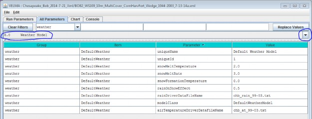
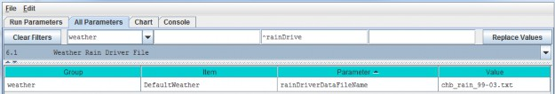
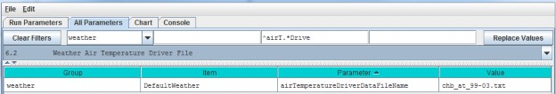
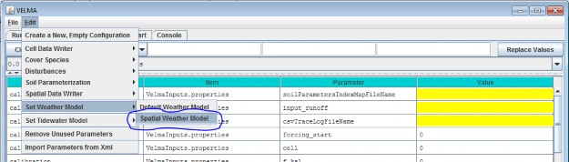
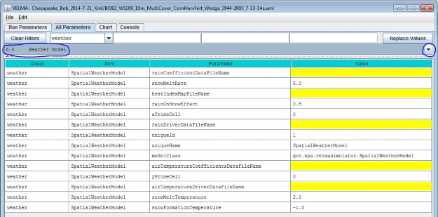
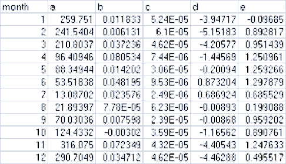
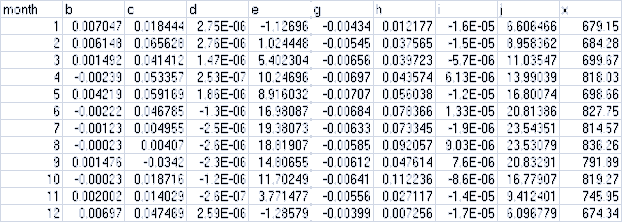
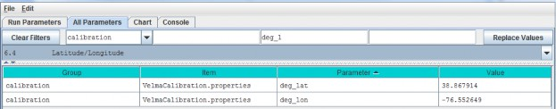
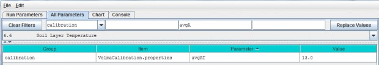

Weather Model
The Default Weather Model provides uniform precipitation and air temperature values for all cells of asimulation's delineated watershed for each day of a simulation run, and includes a simple snow model.
A Default Weather Model is Provided Automatically in New Simulation Configurations
When you create a new simulation configuration in the VELMA GUI (Edit "Create a New, EmptyConfiguration"), it automatically contains parameters for the default weather model. This weather model'smodelClass, uniqueName and uniqueId parameters are preset to valid, default values. You maychange those values if you wish, but there is no need to do so and we advise
you to leave them alone. You must provide the model with the names of data files for precipitation and airtemperature driver data, and parameterize the snow model.
You can focus the All Parameters tab's parameters table to various aspects of the simulation configuration'sweather model by selecting them in the tab's drop-down selector.
To view the complete core weather model parameterization, select "6.0 Weather Model":

You Must Provide the Weather Model with Rain and Air Temperature Driver Files.
The rain and air temperature driver files share the same format requirements: one floating-point value per line,with exactly one line for each day between the first day of the year specified by the simulation configuration'sforcing_start value, and the last day of the year specified by the simulation configuration's forcing_end value.For example, if a forcing start/end range of [2000 to 2001] would require each driver file to have 731 lines ofdata (corresponding to 366 + 365 days per year, accounting for the leap year), with one value per line.
You may omit the path of the driver file names you specify. The Velma simulator then assumes the file's locationis specified by the simulation configuration's input data location settings (set the outline selection to "1.0Input Data Selection" to review or set the input location). You may also provide a fully-qualified path + namefor a driver file. If you do, be sure to use "/" (forward-slash) characters as path-separators.
Select "6.1 Weather Rain Driver File" to focus the parameters table on the weather model's
rainDriverDataFileName parameter.

Each value in this file represents a day's precipitation (in millimeters) at each cell in simulation's thedelineated watershed. Because of the snow model, some of this precipitation may be rain, and some may be snow.The parameterization of the snow model determines the amounts of both.
Select "6.2 Weather Air Temperature Driver File" to focus the parameters table on the weather model'sairTemperatureDriverFileName.

Each value in this file represents a day's average air temperature (in degrees Centigrade) at each cell in thesimulation's delineated watershed.
The Snow Model Determines the Rain / Snow Mixture for the Precipitation Driver Value
The four parameters of the snow model determine how much of a given day's precipitation falls as rain or as snow,and how fast snow on the ground is converted to surface water.
| snowFormationTemperature | The air temperature (in degrees C) below which theday's precipitation is counted as snow. At and above this temperature, it is counted as rain. |
| snowMeltTemperature | The temperature above which any available snow begins to melt. |
| snowMeltRate | The rate at which melting snow becomes surface water. |
| rainOnSnowEffect | Used in conjunction with the snowMeltRate to determine the amount of snow that melts into surface water. |
A Summary Description of the Snow Model's Behavior
For each day of a simulation run, the daily air temperature and precipitation values are taken together with theabove snow model parameters and daily values are calculated for the following: Rain, Snow, Snow Depth andSnow Melt.
When air temperature is at or above the snowFormationTemperature, all the day's precipitation is countedas rain and becomes the day's Rain value. If the air temperature is also greater than thesnowMeltTemperature, the amount of snow that melts is calculated using the following equation:
snowMeltRate * (airT - snowMeltTemperature) + rainOnSnowEffect * rain
where airT and rain are the day's air temperature and precipitation values respectively.
If there has been snow deposited into the Snow Depth value on previous simulation days (see below) the amount ofsnow melted is "deducted" from that value and becomes additional "rain" for the day. If the melted amount thatis computed exceeds the amount of snow depth, the entire amount (but no more) is "deducted".
When air temperature is below the snowFormationTemperature parameter, all the day's precipitation iscounted as snow and becomes the day's Snow value. The day's Snow mount is also added to the Snow Depth value.
6.3.1 - Weather Model Coefficients Files (Only Spatial Weather)
VELMA's default weather model (described under section 6.0 - 6.2) does not address spatial variations intemperature and precipitation associated with topographic features - elevation, slope, aspect and cold airdrainages.
VELMA's optional Spatial Weather Model provides differing precipitation and air temperature values foreach cell of a simulation's delineated watershed for each day of a simulation run. It includes the same simplesnow model as the Default Weather Model.
CAUTION!
The Spatial Weather Model is still somewhat experimental and undergoing testing and refinement.p Also, it requires more effort to configure/parameterize than the Default Weather Model. For both of these reasons, we currently recommend using only the Default Weather Model unless you must have the more complex behavior that the Spatial Weather Model provides, e.g, for mountainous terrain.
You Must Explicitly Specify Activation of the Spatial Weather Model
When you create a new simulation configuration, the VELMA GUI automatically adds a Default Weather Modelparameters group to it. If you wish to use the Spatial Weather Model instead, Click the Edit "SetWeather Model "Spatial Weather Model" menu item:

When you set the weather model to "Spatial Weather Model", the VELMA GUI removes any pre-existing weather modelparameters and adds the parameters group for the Spatial Weather Model.
You can focus the All Parameters tab's parameters table to various aspects of the simulation configuration'sweather model by selecting them in the tab's outline drop-down selector.
The VELMA GUI automatically provides valid default values for the Spatial Weather Model's
uniqueId, uniqueName and modelClass parameters. You may leave these as they are initially set. Toview the complete core weather model parameterization, select "6.0 Weather Model":

You Must Provide the Weather Model with Rain and Air Temperature Driver Files
The Spatial Weather Model derives daily rain and air temperature values for every cell in the simulationwatershed by applying functions to the daily rain and air temperature values of one specific cell (the "Primary"or "Prime" Cell) within the watershed. You must provide the data file names for rain and air temperature dataobserved for this Prime Cell, as well as its x-and-y coordinates as part of the Spatial Weather Model'sparameterization.
Set the xPrimeCell and yPrimeCell parameter's values to the Prime Cell's x (column) and y (row)location.
Set the rainDriverDataFileName and airTemperatureDriverDataFileName to the file names of theprecipitation and air temperature files, respectively.
You may omit the path of the driver file names you specify. The Velma simulator then assumes the file's locationis specified by the simulation configuration's input data location settings (set the outline selection to "1.0Input Data Selection" to review or set the input location). You may also provide a fully-qualified path + namefor a driver file. If you do, be sure to use "/" (forward-slash) characters as path-separators.
The rain and air temperature driver files share the same format requirements: one floating-point value per line,with exactly one line for each day between the first day of the year specified by the simulation configuration'sforcing_start value, and the last day of the year specified by the simulation configuration's forcing_endvalue. For example, if a forcing start/end range of [2000 to 2001] would require each driver file to have731 lines of data, with one value per line.
You Must Provide Files of Coefficients for Precipitation and Air Temperature Calculations The Spatial WeatherModel calculates the day's precipitation and air temperature values for a given cell location by applying aprecipitation or air temperature function to the day's driver precipitation or air temperature value. Thesefunctions map/modify the "seed" value at the Prime Cell to derive a value for the other cells. The functionstake into account the cell's
elevation, flow accumulation and heat index values, and the equations involved require per- month coefficientsfor each term of their equations.
You Must provide the file names (or optionally full path + names) of one file for rain (precipitation) equationcoefficients and one file of air temperature coefficients.
NOTE
Determining the values for precipitation and air temperature coefficients requires detailed knowledge of the equations defining the Spatial Weather Model's behavior.p For additional information concerning theory and procedures for developing statistical coefficients for VELMA's spatial climate model see Appendix 5: Generating daily temperature and precipitation grids for running VELMA: development of statistical models based on monthly PRISM data.
The Precipitation Coefficients File
A comma-separated values (.csv) file containing a table of coefficients for the spatial weather model'sprecipitation equation. The file must contain 13 rows of 6 comma-separated values (columns) each.
The first row is a header row, and the remaining 12 rows provide values for the equation's a, b, c, d and ecoefficients for each month of the year.
Here is an example table of values:

and here are the lines from the corresponding .csv data file:
month,a,b,c,d,e
1,259.751,0.011833,5.24E-05,-3.94717,-0.09685
2,241.5404,0.006131,6.10E-05,-5.15183,0.892817
3,210.8037,0.037236,4.62E-05,-4.20577,0.951439
4,96.40946,0.080534,7.44E-06,-1.44569,1.250961
5,88.34944,0.014202,3.06E-05,-0.20094,1.259266
6,53.51838,0.048195,9.53E-06,0.873204,1.297879
7,13.08702,0.023576,2.49E-06,0.686924,0.685529
8,21.89397,7.78E-05,6.23E-06,-0.00893,0.199088
9,70.03036,0.007598,2.39E-05,-0.00868,0.959202
10,124.4332,-0.00302,3.59E-05,-1.16562,0.890761
11,316.075,0.072349,4.32E-05,-4.40543,1.247633
12,290.7049,0.034712,4.62E-05,-4.46288,0.495517
The Air Temperature Coefficients File
A comma-separated values (.csv) file containing a table of coefficients for the spatial weather model's airtemperature equation. The file must contain 13 rows of 10 comma-separated values (columns) each.
The first row is a header row, and the remaining 12 rows provide values for the equation's a - j and xcoefficients for each month of the year.
Here is an example table of values:

And here are the lines from the corresponding .csv data file:
month,b,c,d,e,g,h,i,j,x
1,0.007047,0.018444,2.75E-06,-1.12696,-0.00434,0.012177,-1.60E-05,6.606466,679.15
2,0.006148,0.065628,2.75E-06,1.024448,-0.00545,0.037565,-1.50E-05,8.958362,684.28
3,0.001492,0.041412,1.47E-06,5.402304,-0.00656,0.039723,-5.70E-06,11.03547,699.67
4,-0.00239,0.053357,2.53E-07,10.24696,-0.00697,0.043574,6.13E-06,13.99039,818.03
5,0.004219,0.059169,1.86E-06,8.916032,-0.00707,0.056038,-1.20E-05,16.80074,698.66
6,-0.00222,0.046785,-1.30E-06,16.98087,-0.00684,0.078366,1.33E-05,20.81386,827.75
7,-0.00123,0.004955,-2.50E-06,19.38073,-0.00633,0.073345,-1.90E-06,23.54351,814.57
8,-0.00023,0.00407,-2.60E-06,18.81907,-0.00585,0.092057,9.03E-06,23.53079,836.26
9,0.001476,-0.0342,-2.30E-06,14.80655,-0.00612,0.047614,7.60E-06,20.83291,791.89
10,-0.00023,0.018716,-1.20E-06,11.70249,-0.00641,0.112236,-8.60E-06,16.77907,819.27
11,0.002002,0.014029,-2.60E-07,3.771477,-0.00556,0.027117,-1.40E-05,9.412401,745.95
12,0.00697,0.047469,2.59E-06,-1.28579,-0.00399,0.007256,-1.70E-05,6.096779,674.34
The Spatial and Default Weather Model Both Employ the Same Snow Model Parameterization of the Spatial WeatherModel's snow (sub)model is exactly the same as that of the Default Weather Model's. See the Default WeatherModel's documentation for the details.
The difference between the two is that the Spatial Weather Model first calculates the precipitation and airtemperature values for the specific cell before applying the snow model's mechanism to determine theday's rain, snow, snow depth and snow melt values. In contrast, the Default Weather Model presents the same(driver) precipitation and air temperature values to the snow model at every cell location in the simulation'swatershed.
6.4 - Latitude/Longitude
The VELMA simulator computes a daily solar radiation value for the latitude and longitude specified by thedeg_lat and deg_lon parameter values. Set the values of these parameters to the latitude andlongitude of your simulation configuration's location. Use decimal degrees, NOT "degrees, minutes, seconds"format for the values. For example:

6.5 - Solar Radiation
In addition to latitude and longitude, VELMA's solar radiation equation requires values for the followingparameters:
| isc | Solar Constant. |
| sr1 | Constant parameter 1 of solar radiation uptake function. |
| sr2 | Constant parameter 2 of solar radiation uptake function. |
| srth | Solar radiation threshold. |
The VELMA GUI automatically provides default values for each of these parameters; these may be acceptable foryour simulation location.
NOTE: Solar radiation parameters are intended for use in computing plant nitrogen uptake and snow melt. Althoughthese modeling capabilities are under development, VELMA 2.0 currently does not include them. That being thecase you may leave the solar radiation parameters set to their default values without affecting your simulationrun results.
6.6 - Soil Layer Temperature
Soil temperature is used in many of VELMA's subroutines, for example, to compute rates of soil organic matter decomposition, plant nitrogen uptake, nitrification, and many other temperature sensitive processes. Documentation describing the equations and methods for computing subsurface temperature per VELMA's four soil layers can be found in Appendix 6.2 section A1.1.
For the soil temperature subroutine to work properly for your simulation site, you need to:
- provide a daily mean air temperature file (see "Required Input Data Files for VELMA Simulations")
- specify values for total soil depth and soil bulk density (see All Parameters sections 4.3 and 4.5,respectively)
- and specify the average annual air temperature for your site (avgAT), as follows:
